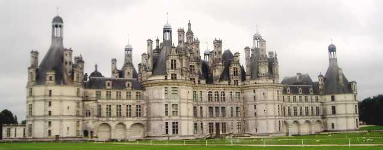
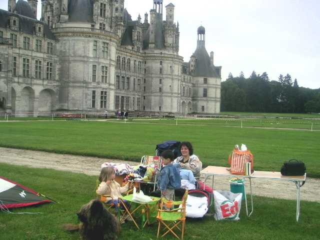
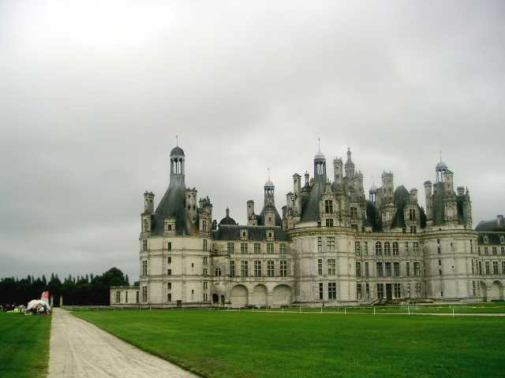
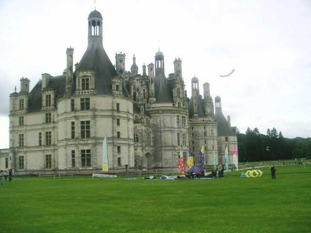
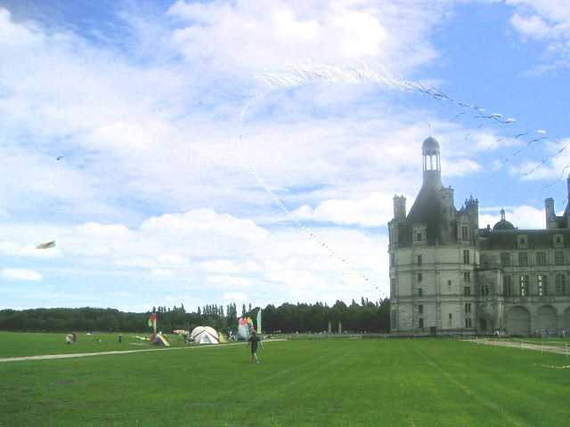
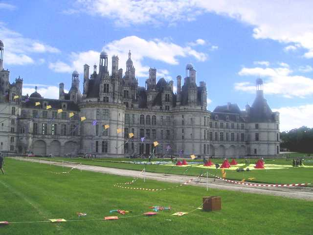
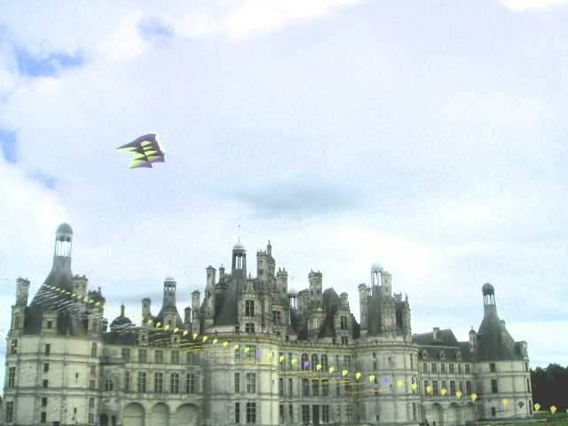
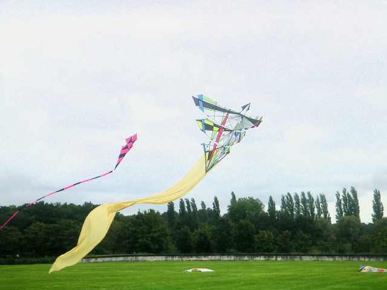
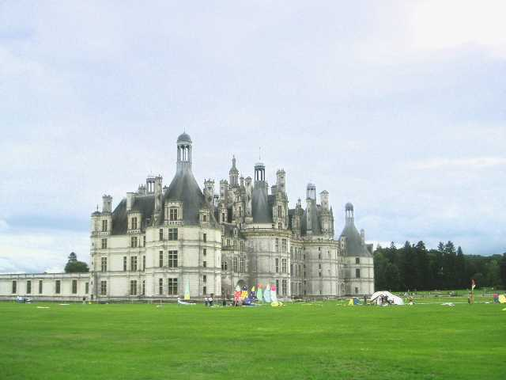

Chambord, rencontre SPF

Le Secours Populaire Français organisait au profit des enfants qui ne peuvent prendre de vacances une journée à Chambord. Le CVCF a répondu présent. C'était charitable et c'était une occasion à ne pas manquer ! Ce château est un miracle, un vaisseau sur la mer de cette plaine, une complexité inouïe dans la simplicité, un juste équilibre entre des blocs à la Le Corbusier et les églises rococo, un chef d'oeuvre de Léonard de Vinci que je préfère à la Joconde. Je refais toujours un petit détour pour le voir quand je ne passe pas trop loin, au hasard de mes pérégrinations cervolistiques.


Prendre son petit-déj sur la pelouse de François 1er, devant ce monstre inoubliable, quel pied !


Les cervolistes s'installaient sur le coté et un peu devant la façade principale.


Les tentes ont donc commencé à se planter là, quasiment au contact du château.


Et puis l'arche est montée et de plus en plus de cerfs-volants.


Nous n'étions pas le seul atelier : une association a reconstitué virtuellement en toile, plantes en pots et grillage habillé les jardins tels que dessinés autrefois.


Le Flow-form a aussi voulu voir le château de haut, et est resté là toute la sainte journée.
A propos d'ateliers, toute la journée le CVCF a construit avec la participation des enfants invités un flot de sleds qu'ils ont pu emporter, et qui volaient drôlement bien, merci Eric.


A part son gigantesque Flow-form bien connu (35 m de long), Vierzon (je crois bien) mettait aussi en vol ce beau CV bien architecturé. J'aime moins la couleur de la queue, même si, par son contraste uni, elle met en valeur le CV lui-même, mais le reste est très beau et original. Il s'appelle Anarlequin de sa "design"euse Anaelle, et héritera plus tard d'une queue blanche, ouf !


La journée a été belle, même si elle s'est terminée par une douche courte mais bonne et qu'on a bien vu arriver depuis l'horizon, on était prêts ! Ensuite, il a fallu replier.
Moi, je n'ai pu m'empêcher de dormir sur place pour revoir encore un petit coup le château tranquillement le lendemain matin...